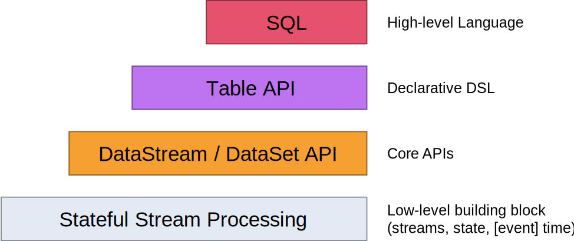
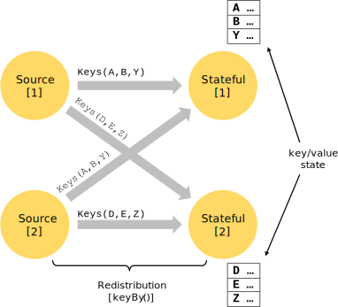
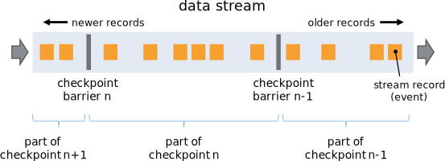
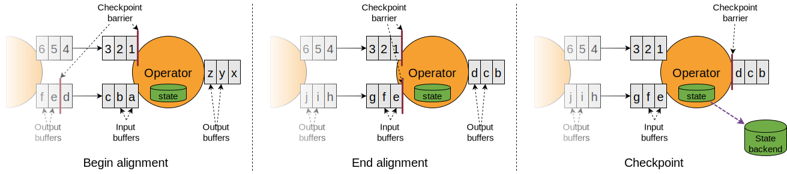
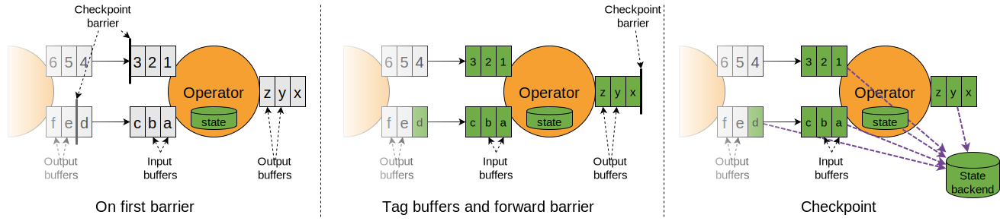
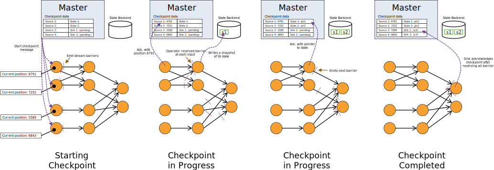
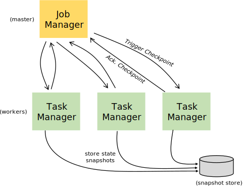

1. StateFul Stream Processing

- Stateful stream processing
- Lowest level abstraction simply offers stateful and timely stream processing.It is embedded into the DataStream API via the Process Function. It allows users to freely process events from one or more streams, and provides consistent, fault tolerant state.
- DataStream(bounded/unbounded streams) / DataSet(bounded data sets) API
- These fluent APIs offer the common building blocks for data processing, like various forms of user-specified transformations, joins, aggregations, windows, state, etc.
- Table API
- The Table API follows the (extended) relational model: Tables have a schema attached (similar to tables in relational databases) and the API offers comparable operations, such as select, project, join, group-by, aggregate, etc. Table API programs declaratively define what logical operation should be done rather than specifying exactly how the code for the operation looks.
- SQL
- This abstraction is similar to the Table API both in semantics and expressiveness, but represents programs as SQL query expressions. The SQL abstraction closely interacts with the Table API
Stateful Stream Processing¶
- Keyed State : Acts like an embedded key/value store.The state is partitioned and distributed strictly together with the streams that are read by the stateful operators.Aligning the keys of streams and state makes sure that all state updates are local operations, guaranteeing consistency without transaction overhead. This alignment also allows Flink to redistribute the state and adjust the stream partitioning transparently.Keyed State is further organized into so-called Key Groups. Key Groups are the atomic unit by which Flink can redistribute Keyed State; there are exactly as many Key Groups as the defined maximum parallelism. During execution each parallel instance of a keyed operator works with the keys for one or more Key Groups.
- 
- State Persistence : Flink implements fault tolerance using a combination of stream replay and checkpointing. The fault tolerance mechanism continuously draws snapshots of the distributed streaming data flow.
- Checkpoint/Snapshot : A checkpoint marks a specific point in each of the input streams along with the corresponding state for each of the operators.By setting the checkpoint interval we can decide the trade-off between overhead of fault tolerance and recovery time(the number of records that need to be replayed). Checkpointing can be done asynchronously.
- Barriers
- These barriers are injected into the data stream and flow with the records as part of the data stream.The barriers then flow downstream. When an intermediate operator has received a barrier for snapshot n from all of its input streams, it emits a barrier for snapshot n into all of its outgoing streams. Once a sink operator (the end of a streaming DAG) has received the barrier n from all of its input streams, it acknowledges that snapshot n to the checkpoint coordinator. After all sinks have acknowledged a snapshot, it is considered completed.
- 
- Barrier alignment for operator with multiple input stream
- As soon as the operator receives snapshot barrier n from an incoming stream, it cannot process any further records from that stream until it has received the barrier n from the other inputs as well. Otherwise, it would mix records that belong to snapshot n and with records that belong to snapshot n+1.
- Once the last stream has received barrier n, the operator emits all pending outgoing records, and then emits snapshot n barriers itself.
- It snapshots the state and resumes processing records from all input streams, processing records from the input buffers before processing the records from the streams.
- Finally, the operator writes the state asynchronously to the state backend.
- 
- Recovery : Upon a failure, Flink selects the latest completed checkpoint k. The system then re-deploys the entire distributed dataflow, and gives each operator the state that was snapshotted as part of checkpoint k. The sources are set to start reading the stream from position Sk
- Unalogned Checkpointing : Especially suited for applications with at least one slow moving data path
- The operator reacts on the first barrier that is stored in its input buffers.
- It immediately forwards the barrier to the downstream operator by adding it to the end of the output buffers.
- The operator marks all overtaken records to be stored asynchronously and creates a snapshot of its own state.
- 
- Recovery : Operators first recover the in-flight data before starting processing any data from upstream operators in unaligned checkpointing. Aside from that, it performs the same steps as during recovery of aligned checkpoints.
- Snapshotting operator state : Operators snapshot their state at the point in time when they have received all snapshot barriers from their input streams, and before emitting the barriers to their output streams. At that point, all updates to the state from records before the barriers have been made, and no updates that depend on records from after the barriers have been applied. The resulting snapshot now contains:
- For each parallel stream data source, the offset/position in the stream when the snapshot was started
- For each operator, a pointer to the state that was stored as part of the snapshot
- 
- State Backends
- The exact data structures in which the key/values indexes are stored depends on the chosen state backend. One state backend stores data in an in-memory hash map, another state backend uses RocksDB as the key/value store. In addition to defining the data structure that holds the state, the state backends also implement the logic to take a point-in-time snapshot of the key/value state and store that snapshot as part of a checkpoint
- 
- Savepoints
- Savepoints are manually triggered checkpoints, which take a snapshot of the program and write it out to a state backend. They rely on the regular checkpointing mechanism for this.
- Barriers
- Checkpoint/Snapshot : A checkpoint marks a specific point in each of the input streams along with the corresponding state for each of the operators.By setting the checkpoint interval we can decide the trade-off between overhead of fault tolerance and recovery time(the number of records that need to be replayed). Checkpointing can be done asynchronously.